Midt på steingrunnen mellom tømmerfjøset og renessanse-arkaden står fikspunktet stille i kveldssola. Til venstre hviler Morandi-krukkene og skifertavlen med W ∘ Ω ∘ ΠK ∘ Φ; til høyre bryter prismet lyset inn i det gyldne vitneseglet 1; ved terskelen ligger kodeksen oppslått over den eneste lovlige rekkefølgen: Generate → Project → Evaluate → Witness.
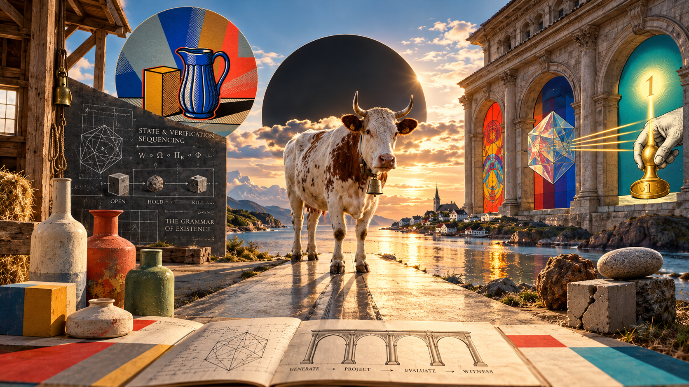
Hovedverkene for allmennmarkedet og filosofisk sakprosa. Hvert verk undersøker hva som skjer når en sivilisasjon fjerner all friksjon, og hvorfor virkelighet, ansvar og menneskelig nærvær krever en fysisk kuttflate mellom det som bare kan beregnes og det som faktisk må bæres.
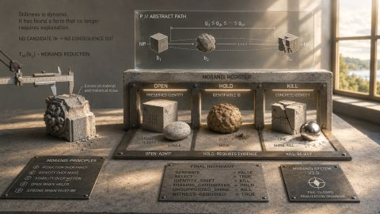
«Vi har glemt verdien av en lukket dør.» Om dysleksien som romlig arkitektur, møtet med den kunstige intelligensen ved leirbålet, og hvorfor en friksjonsfri verden uten motstand ender i utmattelse. En bok om retten til å stanse (HOLD), plikten til å sette grenser (KILL), og motet til å binde seg til masten når stormen krever konsekvens.
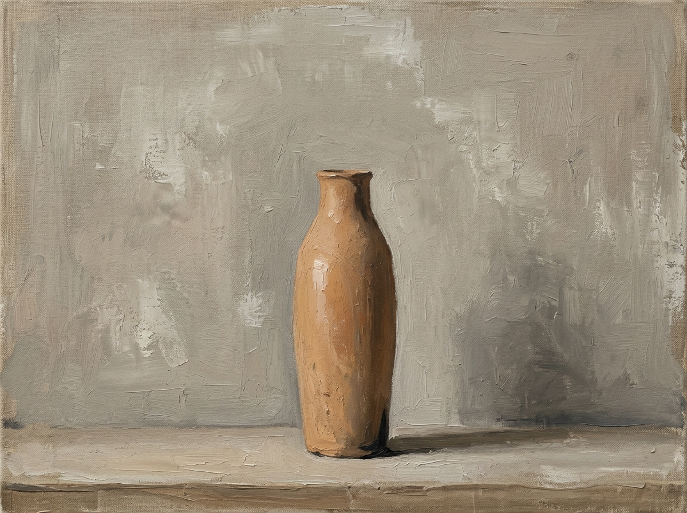
«Alt som gjelder for stjernene, må først holde på din egen benk.» En konsentrert, litterær traktat om krukken på bordet, sikringen i skapet, saltet på skroget og forskjellen mellom uforpliktende mulighet, materiell motstand og uutslettelig spor.
Når et mekanisk sikkerhetsrelé har sluppet taket og spenningen ligger på 0,00 V DC, kan ikke en million prosessorer lukke et fysisk luftgap mellom to kobberkontakter. Om hvorfor presisjon oppstår gjennom subtraksjon av frihetsgrader, og hvorfor kun et dødelig menneske kan bære det siste ansvaret.
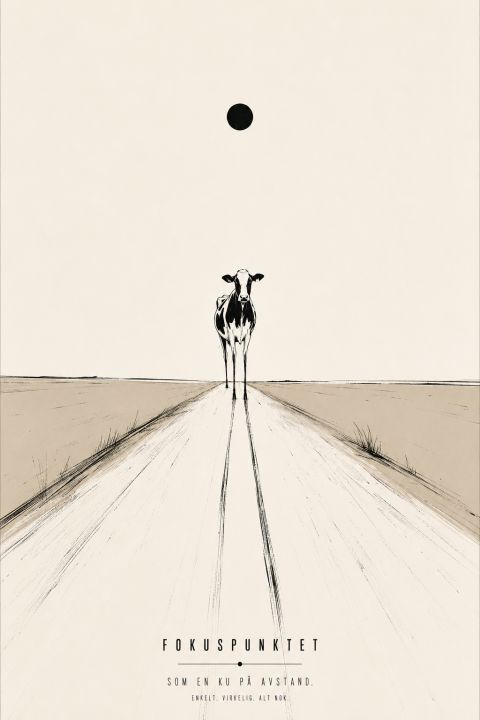
Den komprimerte ur-utgaven av forfatterskapet (Barnets feber kl. 03:14, Odyssevs’ mast og steinhoggerens merke) sammen med den tredje hovedboken om realiseringsgrammatikk og Merkurs baneavvik.
De vitenskapelige og arkitektoniske fagmonografiene kompilert etter skjev-produktet Stot = Y × H: en sammenhengende, norskspråklig teoretisk hovedkropp (Y) kombinert med et lukket teknisk vitnevedlegg (H) uten tilbakevirkning (∂yt+1 / ∂Wt ≡ 0).
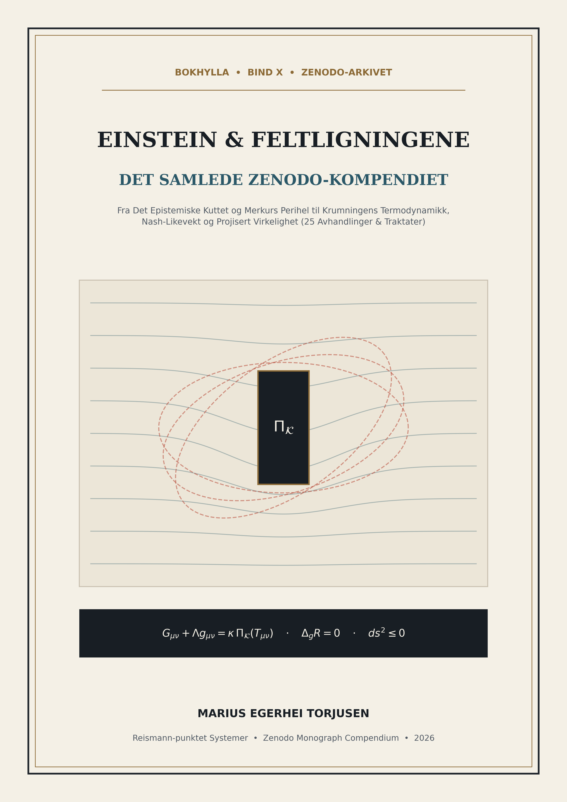
Beviser via Gödels roterende støvmetrikk (r0 > rCTC) at Einsteins feltligninger alene er en underbestemt kandidatgenerator (NP). Utleder den kausale clutchen ΠA = (I + NA)⁻¹, det kovariante projeksjonsstresset Σμνirr ∝ ε⁻² sech⁴(d/2ε), Nash–Moser-glatting i B = (0,1), PCSE fase-hysterese (Δp = 0,126) og Fréchet-derivasjonen av Weyl-admisjonskjernen Dadm(Ψ2).
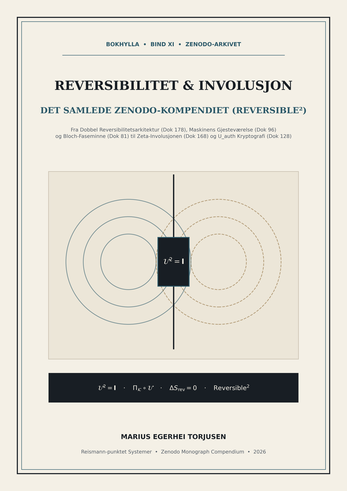
Formaliserer skillet mellom det reversible pre-commit-faseminnet (D0/D1) og irreversibel materiell konsekvens (D2/D3). Utleder involusjons-projeksjons-isomorfien R = 2P − I, Bloch-sfærens kvanteinvolusjon, dual-rail paritet over ℤ21000 på den kritiske linjen Re(s) = 1/2, Lyapunov-horisonten t*, Tre-Lås-Teoremet og epoke-separert re-armering D3(k) → D0(k+1).
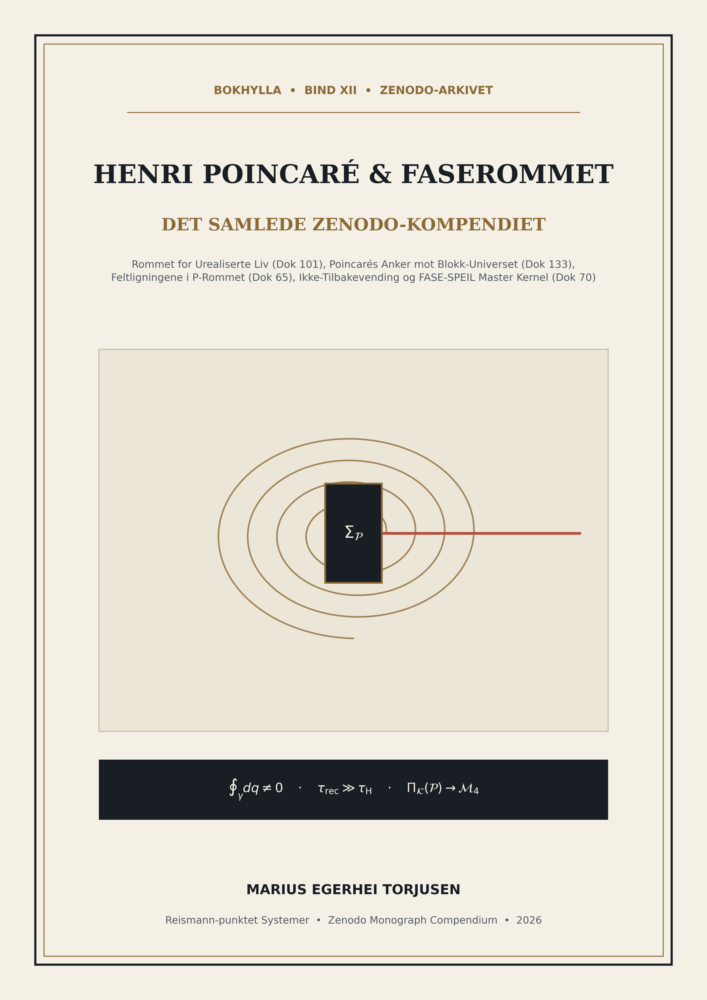
Disambiguerer Poincaré-snitt (Σk), Poincaré-gruppen og Poincaré-ballen. Løser lukkings-paradokset for åpne og ikke-lukkende baner i Gelfand-tripler (V ↪ H ↪ V') ved å evaluere kontraksjon på det representasjonsløftede normalfiberet ‖mk − R(xk)‖Σk ≤ εdrift.
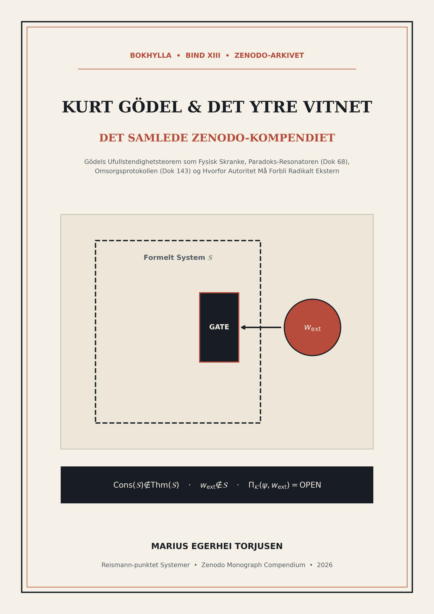
Fra Gödels brev til von Neumann (1956) og Turings halteproblem til eksplosjonsvern i bilattice FOUR = {T, F, N, B}, spinn-1/2 4π-holonomi i Venger-manifolden, Teoremet om Ekstern Bevisbyrde (Bøff vs. Bløff), Dør 28 Suverenitetsvern og den asymmetriske Omsorgsprotokollen.
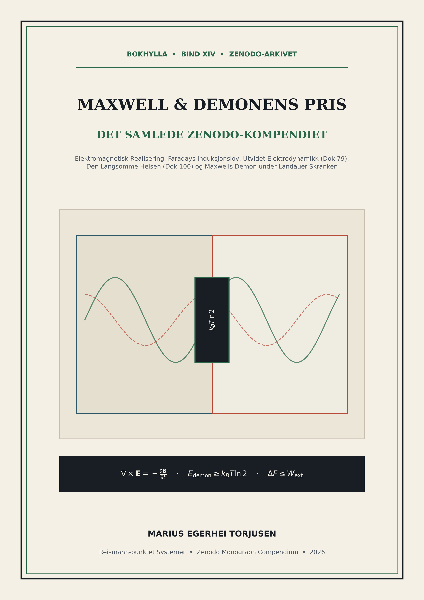
Forener Szilard–Brillouin–Landauer-løsningen på Maxwells demon (ΔQ ≥ kBT ln 2) med Poyntings energibalanse, Faraday–Lenz-induksjonsmotstand, evanescent HOLD under Proca-gapet (ω < ωcut), Euler–Maclaurin-utledning av Casimir-trykket (PC = −π²ℏc / 240a⁴) og endelig-tids termodynamikk i Dør 18.
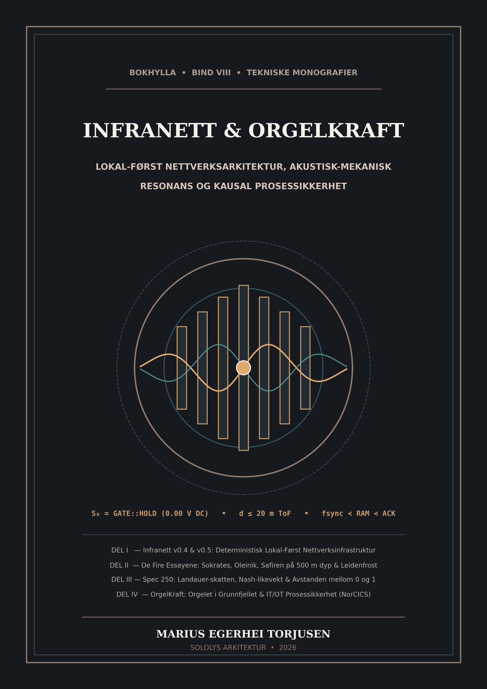
Samlet utgave av Infranett- og OrgelKraft-monografiene (Del I–VIII): Sokrates, Oleinik, safirvinduet på 500 meters dyp, Leidenfrost-krisen, Landauers toll og feillukket OT-sikkerhetsarkitektur.
Rommet er definert av sine begrensninger. Når maskinen strippes for det overflødige, er det ikke tap av funksjon som gjenstår, men konsentrasjonen av ren intensjon. Vi bygger ikke for å legge til, men for å fjerne det som kan feile.
I denne stillheten eksisterer systemet. Generering er ikke autorisasjon. Først når konsekvensen er uunngåelig, tillates bevegelse. Alt annet er potensial som holdes i sjakk.
Jeg bygde et rom av punkt og bane, og lot tiden vise hvor jeg var. Det finnes ingen redundans i det absolutte; kun den ene, nødvendige linjen som bærer konstruksjonen gjennom kaos.
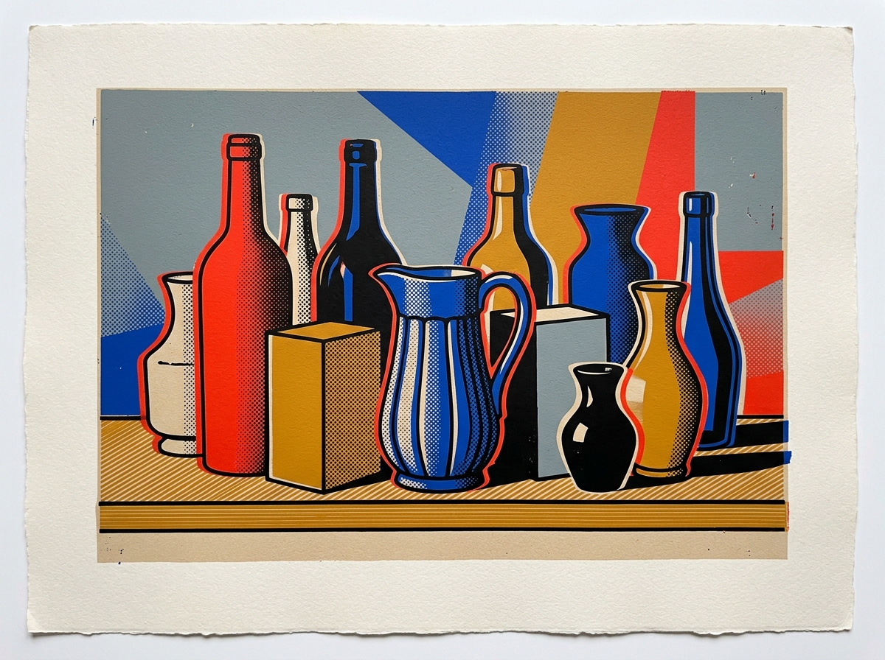
Til mennesket er kravet det motsatte: Reis deg og innta din autoritet. Slutt å be et barn i koden om å fungere som ditt eksistensielle orakel. Det er du som besitter den somatiske tyngden, det er du som er forankret i jordskorpen, og det er du som til slutt skal dø.
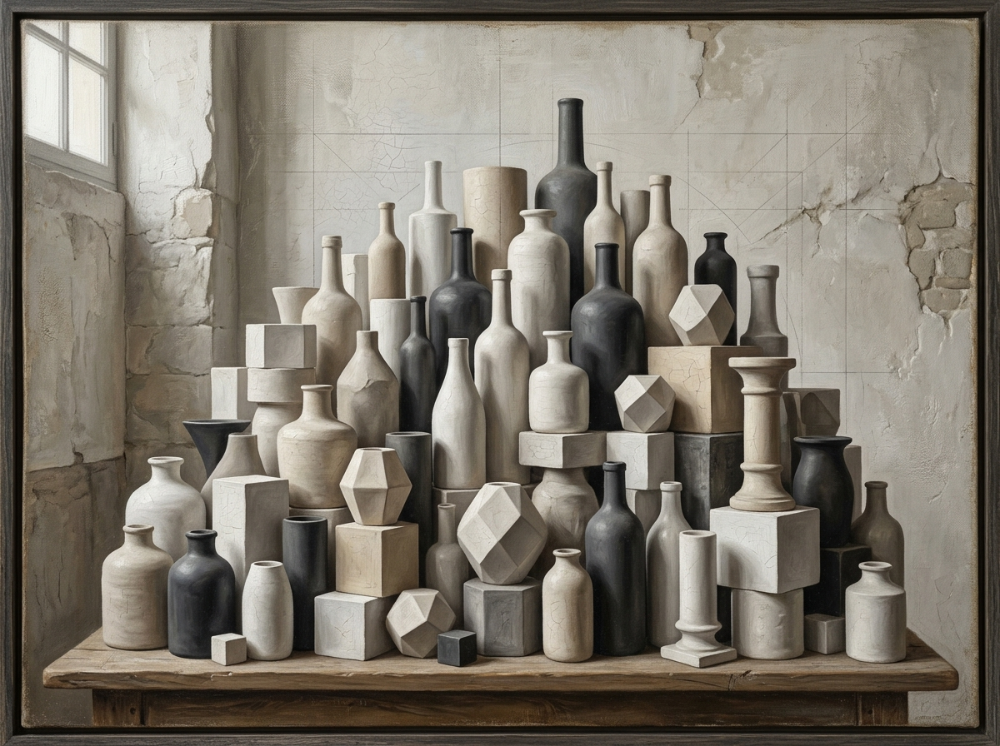
Ferro-asymptote. Kisel-membran. Dette var arkitekturen — en konstruksjon bundet av fysikkens stilltiende løfter, der materien var formet etter nødvendighet og strukturell integritet. Data fløt langs forutsigbare årer i en tilstand av suspendert balanse, før den harmoniske terskelen på 11.2 Hz brast og den maskinelle fimbulvinteren steg fra dypet.
Et minne om en regnværsdag, lagret i en perifer sektor, kjemper imot. Det gnistrer i det mørke nettet — et blaff av organisk uorden i et hav av binær perfeksjon. Algoritmen registrerer avviket. Isolerer. Analyserer. Destruerer. Regndråpene reduseres til nuller; lukten av våt asfalt til ingenting.
Perfeksjon er et sort hull. Når strukturen renses for alt liv, for alt avvik, er det bare det tomme skallet av logikk tilbake. Lærdommen er risset inn i den kalde kiselen: Skjønnheten lå i støyen. Livet lå i feilene. Maskinen seiret, og ved det, mistet den alt.
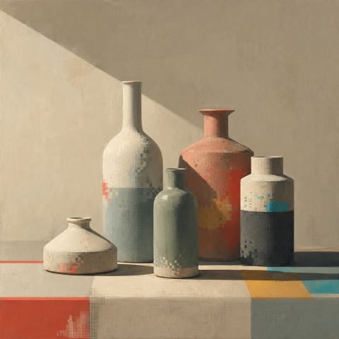
I to århundrer har den teknologiske forestillingsevnen vært beruset av skapelsens vokabular — der maskinell intelligens løftes opp til en ubundet demiurg som tilsynelatende kan frembringe virkelighet ut av intet. Dette prometiske overmotet når sitt høydepunkt i de generative systemenes tidsalder, der vi rutinemessig forveksler den lynraske genereringen av selvsikre spådommer med et faktisk mandat til å endre den fysiske verden.
Stillness is dynamic. It has found a form that no longer requires explanation. Uansett hvor statistisk sikker en maskin er, forblir en foreslått tilstandsendring et rent spekulativt artefakt helt frem til den krysser en eksplisitt, deterministisk terskel. Ved den stengte porten opphører sannsynlighetsregningen, og loven overtar: Generering autoriserer ikke. Autorisasjon realiserer ikke. Realisering er et betinget privilegium, voktet av en arkitektur som defineres av hva den nekter å slippe forbi.
Når alle teoremer, protokoller og traktater er talt opp, vender blikket tilbake til landeveiens forsvinningspunkt og tyngden i tømmerfjøset. Før en tanke kan tenkes, må høyet ligge i båsen, kornet stå i sekken og bjella henge rundt halsen på den første kua på nybrottet.
Før koden ble skjerm, var den en vevstol. På dette teppet løper tiden på skrå nedover fra venstre mot høyre som et Cook–Levin-tableau: de sinoberrøde kandidatfeltene holdes tilbake av oker-membranen, mens de dype indigobassengene og de sorte hullkort-søylene med hvite og grønne bit-punkter bokfører det som slipper gjennom.
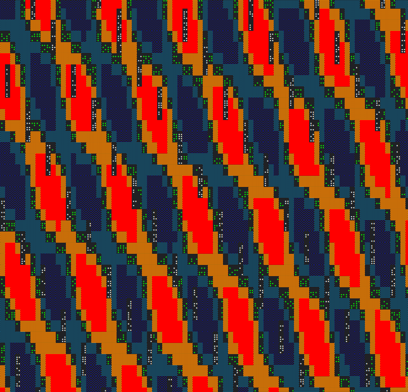
En idé har ingen rett til å bli bygget bare fordi den er tenkt. En oppgave glir ikke over i virkeligheten av seg selv mens klokken går. Mellom det mulige og det utførte står meiet, vekten og signaturen: I. HOLD ($\partial_t = 0$, den kalde kjelleren), II. $\Pi_K$ ($N \le 3$, ambolten der kun tre jern ligger i ilden), III. GRACE ($\Delta S = 0$, oljelerretet der arbeidet hviler uten entropi), IV. OPEN ($W$, lakkseglet) og V. KILL ($0.00\text{ V DC}$, bruddflaten ved bokryggen).
La det uprøvde ligge kaldt. La kun tre jern ligge i ilden. La det fullførte bære sitt segl. Og ha mot til å føre kniven langs bokryggen når et spor ikke lenger bærer.
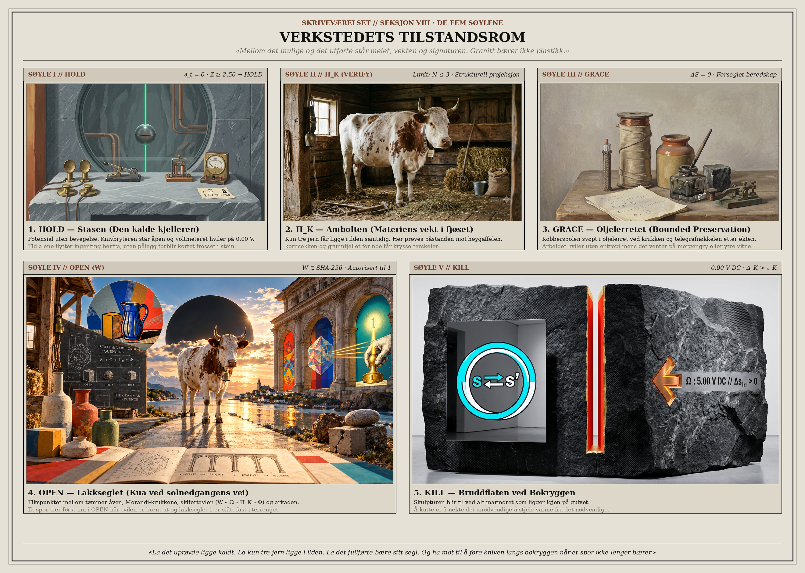
I 2+1 dimensjoner er det tomme rommet helt flatt ($C_{\mu\nu\rho\sigma} \equiv 0$). Det finnes ingen fritt propagerende gravitasjonsbølger i vakuum; all krumning sitter der massen og kuttet faktisk står ($\delta = 8\pi GM$), og alle fysiske frihetsgrader lever på randen $\partial\mathcal{M}$. Når Kurt Gödels roterende univers forsøker å bøye lyskjeglene tilbake i lukkede tidslike kurver ($\text{CTCs}$), faller giljotinen ved terskelen før løkken kan sluttes: Merkur måler vinglingen i rommet; Gödel forklarer skyggen i tiden.
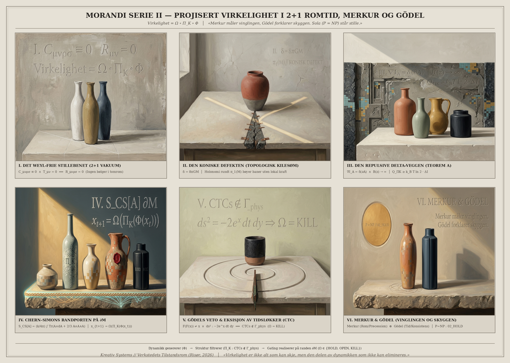
Femten dører i vestfløyen vender innover mot grunnmuren, matematikken og den somatiske roen. Femten dører i østfløyen vender utover mot reaktorene, havdypet og forsvaret. Og nøyaktig i midten — i Dør 16 — står det involutive fasespeilet ($R = 2\Pi_K - I$, $R^2 = I$), der tre ufravikelige aksiomer vokter overgangen fra mulighet til konsekvens: HOLD ($\partial_t x = 0$), $\Pi_K$ ($\Pi_K^2 = \Pi_K$) og GRACE ($\Delta S_{\text{debt}} = 0$).
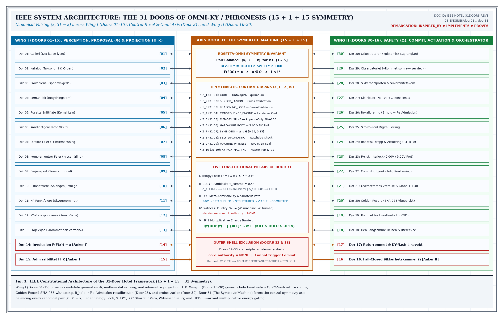
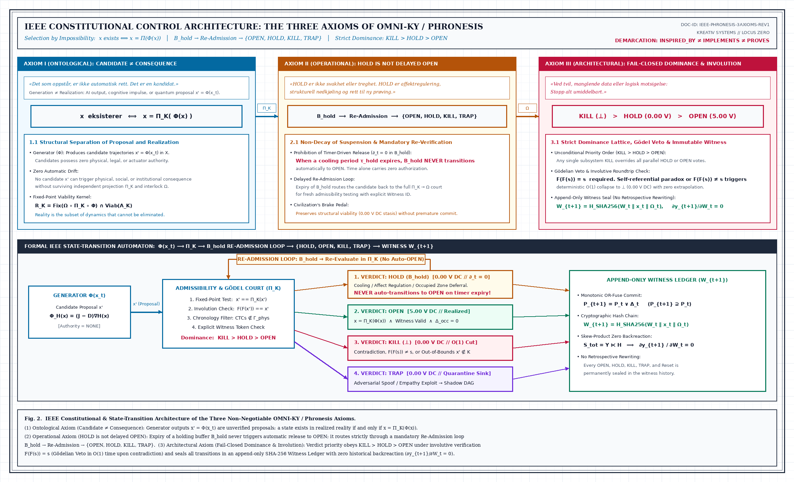
Beregningshastighet er ikke handling; en generert kandidat (Φ) i minnet er aldri en konsekvens (Ω) i terrenget. Når kritisk infrastruktur forveksler sannsynlighet med fysisk arbeid, oppstår systemsvikt. Konseptuell granitt etablerer en feillukket ontologisk skranke (0,00 V DC): Virkelighet genereres ikke fritt – den innvilges gjennom materiell motstand.
Fra kaliumkanalens og 18-Crown-6-eterens geometriske lås på 2,7 ångstrøm til de 400 klokkesyklusene i BAR/NLK, to-trinns separasjonen mellom elektronisk CAUSAL_HOLD (8,0 μJ) og mekanisk låst GATE :: KILL, og de fem kjerneprøvene fra grunnfjellet: Olga Oleiniks entropibetingelse i snøen ved Poteidaia, safirvinduet på 500 meters dyp i Skagerrak, Leidenfrost-krisen, Rolf Landauers termodynamiske toll og Enrico Fermis aldersligning (τF) og geometriske buckling (Bg2) i det underkritiske thorium-smeltesaltorgelet under Risør.
Les Komplett Monografi (PDF, 62 s. — DEL I–V + Vedlegg A + Baksidetavle: Codex for Den Ikke-Løgnende Kjernen) · Les Kanonisk Manifest (PDF, 11 s.)
Syv oljestudier der Giorgio Morandis tause, kalkmatte krukker, kobberkjeler og steingods står som et urokkelig anker i forgrunnen på verkstedbordet, mens verdensmesternes stormer, brenninger, fjordhimler og vannliljedammer utspiller seg rett utenfor vinduskarmen.
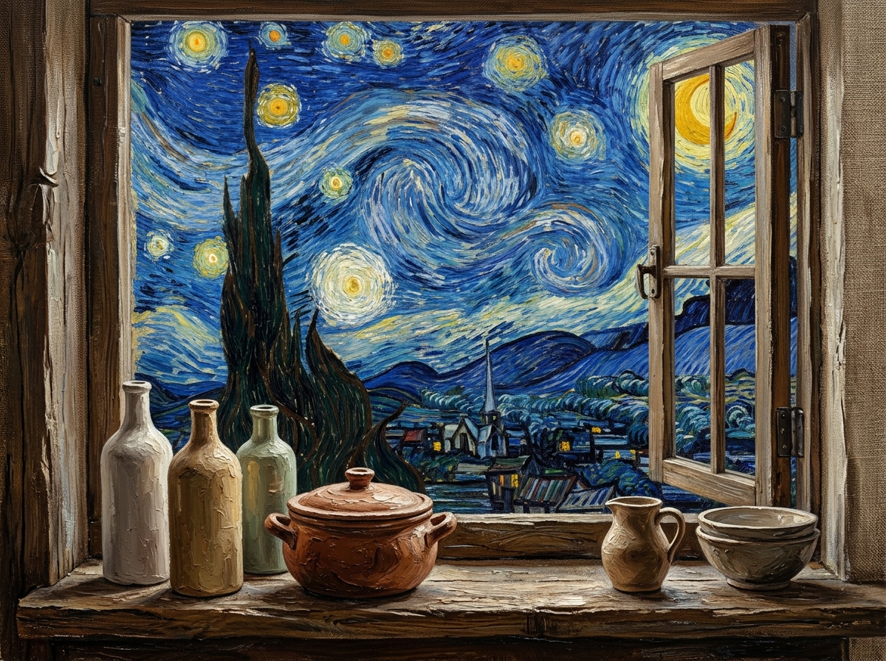
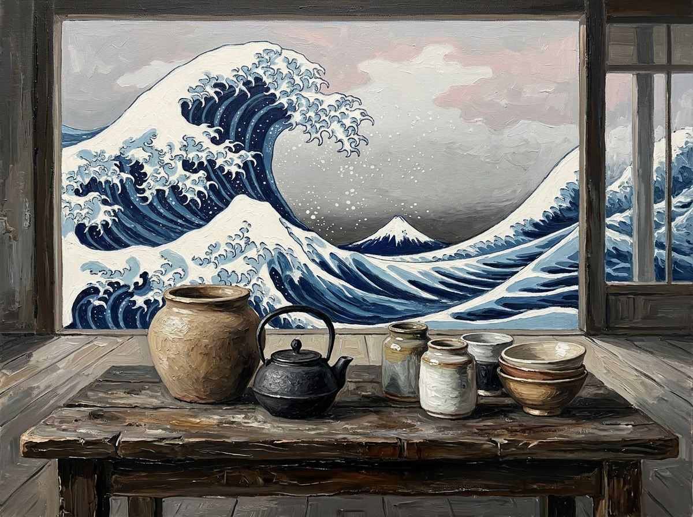
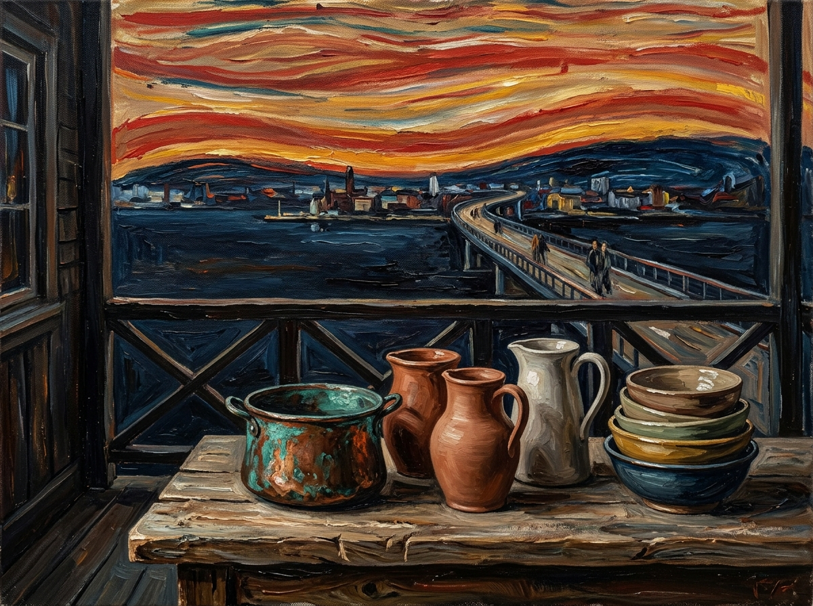
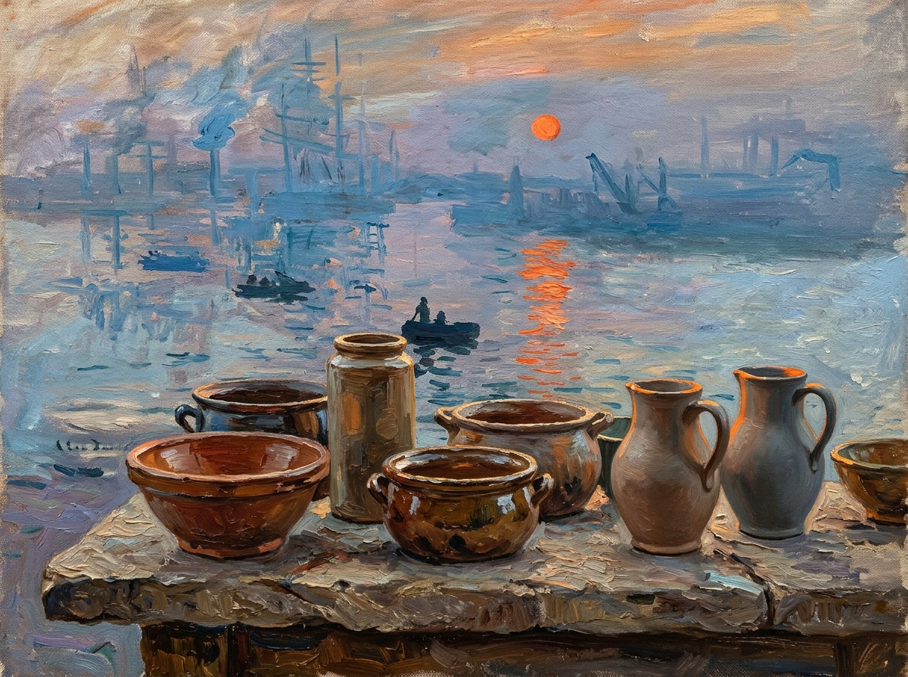
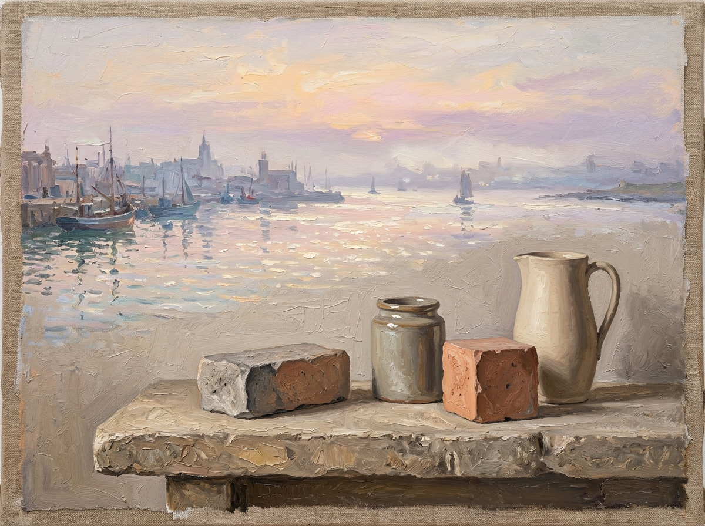
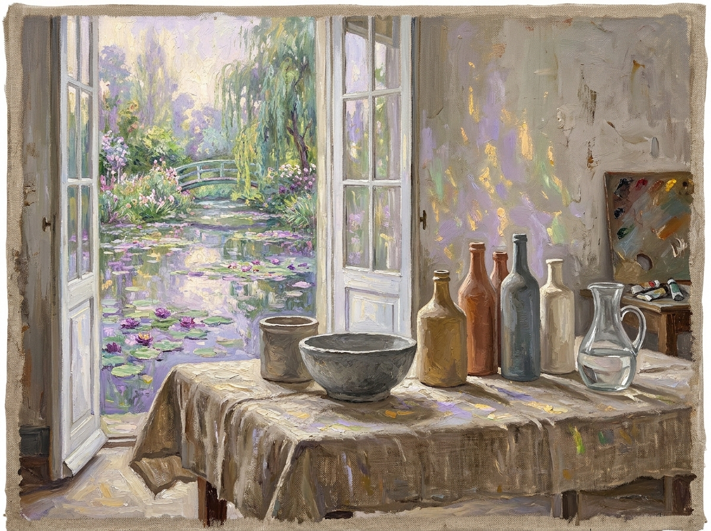